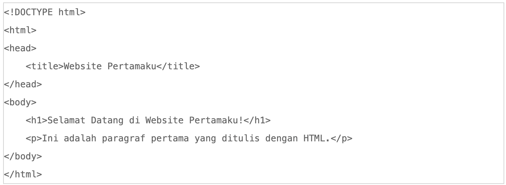

Apa Itu HTML?
HTML atau HyperText Markup Language adalah bahasa markup yang digunakan untuk mengatur struktur konten di halaman web. HTML terdiri dari elemen-elemen yang disebut tag, yang menentukan bagaimana teks, gambar, tautan, dan elemen lain ditampilkan di browser. HTML adalah pondasi utama dari semua situs web; bahkan halaman web yang paling kompleks pun dimulai dengan HTML. Di dunia pengembangan web, HTML adalah dasar yang wajib dikuasai. HTML bekerja sama dengan CSS (Cascading Style Sheets) untuk tampilan dan JavaScript untuk interaktivitas. Karena itu, belajar HTML adalah langkah pertama yang sangat penting bagi siapa pun yang ingin belajar cara coding HTML dan membangun web.
Persiapan untuk Belajar HTML
Sebelum mulai latihan HTML, Kamu perlu menyiapkan beberapa alat sederhana:
- Teks Editor untuk Menulis HTML Dasar
- Web Browser untuk Melihat Hasil HTML
Teks editor adalah alat utama yang digunakan untuk menulis kode HTML. Ada banyak pilihan teks editor yang tersedia, baik gratis maupun berbayar, seperti Notepad, Notepad++, Atom, Sublime Text, dan Visual Studio Code. Visual Studio Code sering direkomendasikan karena fitur-fiturnya yang mendukung berbagai bahasa pemrograman, termasuk HTML, dan sangat cocok bagi pemula yang belajar HTML dari nol.
Setelah menulis HTML di teks editor, Anda memerlukan web browser untuk melihat hasil dari kode yang Anda tulis. Beberapa browser populer seperti Google Chrome, Mozilla Firefox, atau Microsoft Edge bekerja dengan baik untuk ini. Cukup buka file HTML di browser, dan Anda akan melihat halaman web yang sudah Anda buat dengan HTML.
1. Mengenal Tag, Elemen dan Atribut
HTML terdiri dari tag, elemen dan atribut yang masing-masing memiliki peran penting.
- Tag
- Elemen
- Atribut
Tag adalah kode yang mengawali dan mengakhiri sebuah elemen di HTML, biasanya ditulis di antara tanda kurung sudut
Elemen adalah kombinasi dari tag pembuka, isi, dan tag penutup.
Atribut adalah informasi tambahan yang diberikan di dalam tag untuk memberikan properti tertentu pada elemen.
2. Memahami Struktur Dasar HTML
Struktur HTML terdiri dari beberapa elemen utama yang membuat halaman web memiliki format standar.
- Tag (!DOCTYPE html)
- Tag (HTML)
- Tag (HEAD)
- Tag (BODY)
Tag (!DOCTYPE html) menandakan tipe dokumen dan ditempatkan di baris paling atas file HTML untuk menginstruksikan browser bahwa dokumen ini adalah HTML5.
Tag (HTML) merupakan elemen utama yang mengapit seluruh kode HTML.
Tag (HEAD) Anda dapat memasukkan informasi penting seperti judul halaman.
Tag (BODY) semua konten yang akan ditampilkan di browser akan ditulis, termasuk teks, gambar, video, dan elemen lainnya.
3. Menyiapkan Editor HTML
Setelah memahami struktur dasar HTML, langkah selanjutnya adalah menyiapkan teks editor Anda untuk menulis kode HTML. Buka editor favorit Anda dan buat file baru, lalu simpan dengan ekstensi .html, seperti index.html. Ini akan menjadi file utama yang bisa Anda jalankan di browser.
4. Membuka Web Browser
Setelah membuat file HTML, buka file tersebut di browser untuk melihat hasil kode HTML Anda. Cukup klik kanan pada file HTML dan pilih “Open with” lalu pilih browser yang Anda inginkan.
5. Membuat Halaman Website Pertama
Mulailah dengan membuat halaman sederhana. Di dalam file HTML, tambahkan kode berikut:

6. Melengkapi Halaman Website
Setelah berhasil membuat halaman pertama, Anda dapat menambahkan elemen-elemen lain seperti gambar, tautan, atau daftar. Misalnya, untuk menambahkan gambar, Anda bisa menggunakan tag "img /".
7. Mengatur Template Halaman Website dengan HTML
Untuk membuat website yang lebih terstruktur, Anda bisa mengatur layout dasar seperti header, footer, dan main content.
8. Memodifikasi Kode Warna HTML
HTML mendukung berbagai cara untuk menambahkan warna pada elemen dengan menggunakan CSS.
Belajar HTML Ternyata Sangat Menyenangkan!
Belajar HTML dari nol memang membutuhkan waktu, tetapi sangat mungkin dilakukan. Dengan latihan HTML yang rutin, pemahaman struktur HTML, dan mencoba berbagai elemen yang tersedia, Anda akan semakin mahir. Teruslah bereksperimen dan perbaiki keterampilan Anda dengan mencoba membuat halaman yang lebih kompleks. Jangan lupa untuk memahami cara coding HTML dengan tepat agar halaman yang Anda buat bisa berjalan dengan baik di berbagai browser. Semoga panduan ini membantu Anda memulai perjalanan belajar HTML dan menjadi langkah awal Anda sebagai developer web!